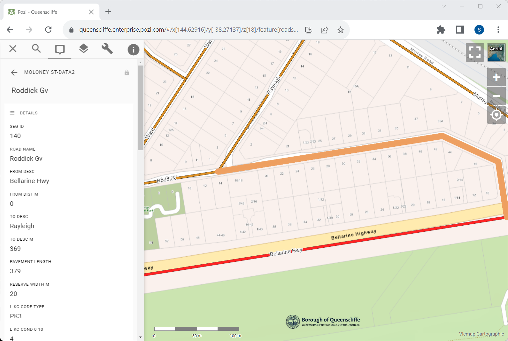

#
Moloney
Pozi integrates with the Moloney Assset Management System.
Moloney stores its asset data in advanced spreadsheets. Pozi dynamically extracts asset attributes directly from the spreadsheets for any selected features in compatible map layers. The map layer needs only an asset id field (eg, road segment id) to be populated.

#
VRT Configuration
An example configuration in the VRT file is as follows:
Download the following VRT file and place it in the same folder as the source St-data2.xlsm file.
<?xml version="1.0" encoding="UTF-8"?>
<OGRVRTDataSource>
<OGRVRTLayer name="stdata2">
<SrcDataSource relativeToVRT="1">St-data2.xlsm</SrcDataSource>
<SrcSql dialect="sqlite">select * from 'MASTER SHEET' where Field1 != '' limit 10000 offset 21</SrcSql>
<Field name="Seg_ID" src="Field1" type="Integer"/>
<Field name="Road_Name" src="Field2" type="String"/>
<Field name="From_Desc" src="Field3" type="String"/>
<Field name="From_Dist_m" src="Field4" type="Real"/>
<Field name="To_Desc" src="Field5" type="String"/>
<Field name="To_Desc_m" src="Field6" type="Real"/>
<Field name="Pavement_Length" src="Field7" type="Real"/>
<Field name="Reserve_Width_m" src="Field8" type="Real"/>
<Field name="L_Fpath_Code_Type" src="Field13" type="String"/>
<Field name="L_Fpath_Width_m" src="Field14" type="Real"/>
<Field name="L_Fpath_Cond_0_10" src="Field16" type="Real"/>
<Field name="L_Fpath_Const_M_Y" src="Field19" type="Date"/>
<Field name="R_Fpath_Code_Type" src="Field27" type="String"/>
<Field name="R_Fpath_Width_m" src="Field28" type="Real"/>
<Field name="R_Fpath_Cond_0_10" src="Field30" type="Real"/>
<Field name="R_Fpath_Const_M_Y" src="Field33" type="Date"/>
<Field name="Date_Fpath_Insp" src="Field41" type="Date"/>
<Field name="Fpath_Comments" src="Field42" type="String"/>
<Field name="Fpath_Nxt_Trtmnt_Cde_Typ" src="Field43" type="String"/>
<Field name="L_KC_Code_Type" src="Field46" type="String"/>
<Field name="L_KC_Cond_0_10" src="Field48" type="Real"/>
<Field name="L_KC_Const_M_Y" src="Field51" type="Date"/>
<Field name="R_KC_Code_Type" src="Field58" type="String"/>
<Field name="R_KC_Cond_0_10" src="Field60" type="Real"/>
<Field name="R_KC_Const_M_Y" src="Field63" type="Date"/>
<Field name="Date_KC_Insp" src="Field70" type="Date"/>
<Field name="KC_Comments" src="Field71" type="String"/>
<Field name="KC_Nxt_Trtmnt_Cde_Typ" src="Field72" type="String"/>
<Field name="Formn_Code_Type" src="Field120" type="String"/>
<Field name="Formn_Width_m" src="Field121" type="Real"/>
<Field name="Formn_Area_sqm" src="Field131" type="Real"/>
<Field name="Date_Formn_Insp" src="Field132" type="Date"/>
<Field name="Formn_Comments" src="Field133" type="String"/>
<Field name="Pavt_Code_Type" src="Field137" type="String"/>
<Field name="Pavt_Width_m" src="Field138" type="Real"/>
<Field name="Pavt_Cond_0_10" src="Field141" type="Real"/>
<Field name="Pavt_Area_sqm" src="Field154" type="Real"/>
<Field name="Date_Pavt_Insp" src="Field165" type="Date"/>
<Field name="Pavt_Comments" src="Field166" type="String"/>
<Field name="Pavt_Nxt_Trtmnt_Cde_Type" src="Field167" type="String"/>
<Field name="Pavt_Nxt_Trtmnt_Width" src="Field168" type="String"/>
<Field name="Seal_Weight_Cond_0_10" src="Field177" type="Real"/>
<Field name="Seal_Area" src="Field191" type="Real"/>
<Field name="Seal_Last_Trtmnt_Code" src="Field192" type="String"/>
<Field name="Seal_Last_Trtmnt_Date_M_Y" src="Field193" type="String"/>
<Field name="Seal_Prop_Trtmnt_Code" src="Field194" type="String"/>
<Field name="Seal_Prop_Trtmnt_Date_M_Y" src="Field195" type="Date"/>
<Field name="Seal_Date_Insp" src="Field198" type="Date"/>
<Field name="Seal_Comments" src="Field199" type="String"/>
<Field name="General_Comments" src="Field200" type="String"/>
<Field name="Rural_or_Town" src="Field203" type="String"/>
<Field name="Sealed_or_Unsealed" src="Field204" type="String"/>
<Field name="Township" src="Field206" type="String"/>
<Field name="Road_Status_1" src="Field207" type="String"/>
<Field name="Traf_Cnt_ADT" src="Field208" type="Real"/>
<Field name="Traf_Cnt_Perc_Hvy_Veh" src="Field209" type="Real"/>
<Field name="Location_Year" src="Field210" type="String"/>
<Field name="Road_Hierarchy" src="Field211" type="String"/>
<Field name="Road_Status_User_Defined" src="Field212" type="String"/>
<Field name="Road_Hierarchy_2" src="Field213" type="String"/>
<Field name="Strategic_or_Bus_Route" src="Field214" type="String"/>
<Field name="Map_Ref" src="Field216" type="String"/>
<Field name="Map_Grid_1" src="Field217" type="String"/>
<Field name="Map_Grid_2" src="Field218" type="String"/>
<Field name="Public_Road" src="Field225" type="String"/>
<Field name="Date_Proclaimed_Public" src="Field226" type="Date"/>
<Field name="Road_Register_Class" src="Field228" type="String"/>
<Field name="Ref_To_Boundaries" src="Field229" type="String"/>
<Field name="Ref_To_Agreements" src="Field231" type="String"/>
<Field name="Infr_On_Public_Roads" src="Field234" type="String"/>
<Field name="LSC_RRA" src="Field237" type="String"/>
<Field name="Other_CRA" src="Field238" type="String"/>
<Field name="Notes" src="Field239" type="String"/>
</OGRVRTLayer>
</OGRVRTDataSource>
#
QGIS Configuration
Add the VRT file as a vector dataset to your QGIS project.
In the new dataset's layer properties, go to QGIS Server > Keyword list.
Keyword list: parent=Roads, parameter=EXP_FILTER=Seg_ID in ('[SegmentID]')
...where Roads is the name of your spatial layer and SegmentID is the name of the road segment id field in the roads layer.
Remember to enable the layer for WFS in the project properties.